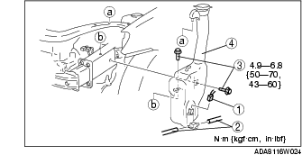
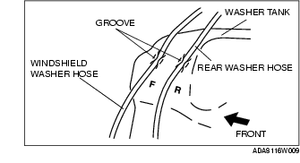

Washer tank removal/installation
1. Disconnect the negative battery cable.
2. Remove the front bumper. (See FRONT BUMPER REMOVAL/INSTALLATION.)
3. Remove the front combination light (LH). (See FRONT COMBINATION LIGHT REMOVAL/INSTALLATION.)
4. Remove in the order indicated in the table.

|
1
|
Connector
|
|
2
|
Washer hose
|
|
3
|
Bolt
|
|
4
|
Washer tank
(See Washer Tank Removal Note.)
|
5. Install in the reverse order of removal.
Washer Tank Removal Note
1. Lift up the washer tank and remove the part a indicated in the figure from the shroud panel.
Washer Hose Installation Note
1. Install the washer hoses placing them in the washer tank grooves.
